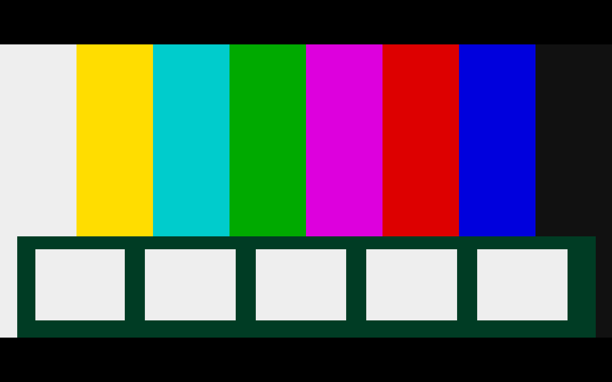

Three Raspberry Pi targets
The ARM64 SD-card image includes device trees for Zero 2 W, 3B, and 3B+. Raspberry Pi firmware chooses the board configuration at boot.
avolzila_platform / Buildroot image
A Buildroot-based Raspberry Pi image for dedicated SDL2 appliances. It boots straight into an application. This is the embedded device layer beneath the avolzila_runtime approach.
01 / Purpose
avolzila_platform packages a minimal Linux system, graphics and audio support, and a launch path for one fullscreen application. avolzila_runtime is the separate program-host layer, with VP64 as its reference integration. Makers can select a different application package while keeping the platform design.
The ARM64 SD-card image includes device trees for Zero 2 W, 3B, and 3B+. Raspberry Pi firmware chooses the board configuration at boot.
The supplied SDL2 configuration uses KMS/DRM and OpenGL ES for fullscreen graphics, with ALSA for audio. There is no desktop session or compositor in the image.
System and application files live on SquashFS. Temporary files use bounded RAM storage, so normal operation does not need a writable data partition.
02 / Anatomy
The Buildroot external tree supplies board configuration, packages, and startup scripts. The result is a bootable image that hands control to a non-root application session.
Cross-build an ARM64 kernel, root filesystem, SDL2 stack, and selected application package.
Place firmware and kernel in a FAT boot partition, then an immutable SquashFS root partition.
Firmware selects the matching device tree. The root mounts read-only, with scratch space in RAM.
BusyBox init starts the chosen SDL2 application as the dedicated UID 1000 appliance user.
Architecture diagram derived from the image configuration and launch scripts.
03 / Validation view
A small SDL2 probe verifies the image’s graphics, input, and audio route in QEMU before a game or other application is packaged. This capture shows the probe pattern, not a finished product interface.

The probe exercises KMS/DRM video, the SDL2 renderer, evdev keyboard input, and ALSA audio. The image is retained as evidence of the virtual test path.
04 / For makers
avolzila_platform is the embedded image beneath a selected application. It supplies Pi boot, device access, display and audio. avolzila_runtime names the generalized layer for native-program integrations, with VP64 as its working reference. The image repository’s probe and Pokeri packages demonstrate its current application-selection mechanism.
Select an SDL2 application package when building the image; the runtime approach is a separate layer above the platform.
Use the exported ARM64 SDK and the Docker-based build workflow.
Exercise the image in QEMU, then validate display, input, audio, and startup on the target Raspberry Pi hardware.